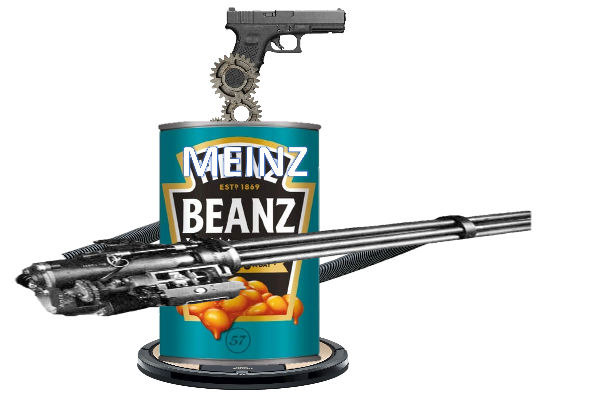

| Unit |
Unit Name |
Description |
Stats |
Abileties |
|  |
Heavy Bean. |
Heavy Weapons Bean that only knows how to spray in the general direction. |
Hp: 200. Def: 50. Attack: 50 Speed: 2 |
Spray N' Pray: Shoots many bean bullets at the enemy using the minigun. Gunshootski: sends up a glock and shoots the target. Hover: Hovers slowly above the ground. |
|
Bean Poltergaist. |
A ghost possesing the remains of a bean mimic. |
Hp: null. Def: null. Attack: 100 Speed: unknown |
Cutter: decapitates the target. .Chomp: Bites target. Consume: Consumes target whole. .Desguise: Hide as a regular can of beans. Ghost: Cant die (at least by regular attacks) |
|
Oni Bean. |
The greatest swordfighter in the east. |
Hp: 150. Def: 30. Attack: 60 Speed: 10 |
Slash: Cuts the target. Cursed: Curses target with misfortune. .Steath 100: Uses smoke bombs to sneak around (+10 attack, speed and stealth during abilety) |
|
Kamakazie Bean. |
Good Missile alternative as it is quite effective. |
Hp: 50. Def: 5. Attack: 100 Speed: 10 |
Drop: Falls on the target and blows up (will make itself die). Rotors: Unit flies. |
 |
Nuclear Bomber Bean. |
Nobody has survived to see it fight. Not even itself. Well it has never fought anybody. |
Hp: 50. Def: 50. Attack: 999 Speed: 3 |
Yeet N' Delete: Thows a small nuke at the target. Gigaton Missile: Fires the BEEG nuke at the target. |
 |
Brawler Bean. |
Peak Melee attacker performence. |
Hp: 150. Def: 70. Attack: 90 Speed: 15 |
Punch: Punches target. Kick: Kicks target Combo: Does multible punches and can constantly hit the enemy. Block: Blocks most attacks. |
 |
The Perfect Bean. |
An amalgamation of the original beans. |
Hp: 1000. Def: 90. Attack: 500. Speed: 5 |
Punch: Punches target using glove hand. Shoot: Shoots target using gun hand. Cut: Decapitates target using cutter hand. Slash: Slashes target using katana hand. Missile: Launches missile at target. Bean Canon: Shoots a big bean blast. Rotors: Flies. Disguise: Can hide its weapons to look like a regular can of beans. Block: blocks some attacks. |